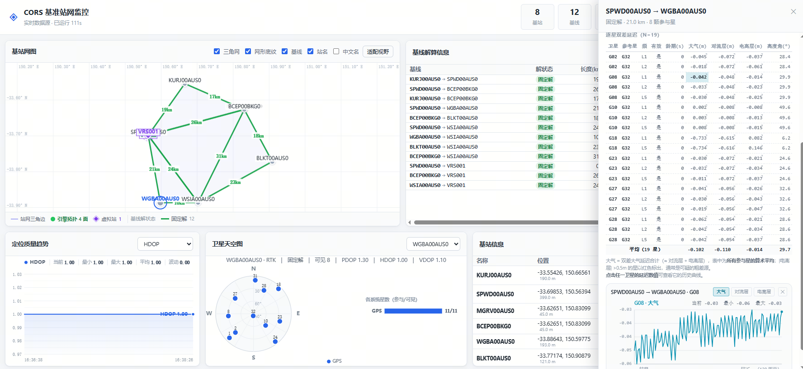

1System Overview and Principles
mcors is a CORS (Continuously Operating Reference Station) network solution and monitoring system. It has two parts:
- C/C++ engine (
cors-engine.exe) — NTRIP data ingestion, baseline solving, error modelling, virtual reference station (VRS) service, and console command handling. - Web dashboard — the collector (Node.js) converts engine data into a web-consumable format; the front end renders it live in the browser.
1.1 How Data Flows
Understanding this chain is the foundation for every troubleshooting step that follows. Data travels from the upstream stations to your browser through five stages:
NTRIP server→ Engine · NTRIP client→ Engine · solution core
(baselines / VRS / atmospheric modelling)→ Solution data stream
TCP 8080→ Collector
Node.js→ Browser dashboard
8181
Two design points worth remembering:
- The engine and the collector are decoupled. The engine only computes, then broadcasts results to port 8080; the collector connects outward to 8080 to fetch them. So a collector failure does not stop solving, and restarting the engine does not affect the collector start order.
- The console has two entry points, and they do not use the same protocol. The engine itself exposes a plain TCP text console on 9000; the collector forwards an HTTP
/api/consoleon 8181. You cannot reach the engine withcurl http://<engine-IP>:9000/api/console— that port does not speak HTTP and returns an empty response. HTTP requests must go to 8181.
1.2 The Four Ports
| Port | Service | Purpose | Protocol |
|---|---|---|---|
9000 | Engine console | Accepts command text (add/remove stations, query status, and so on); also the input point for start-gui and similar commands | Plain TCP text |
8080 | Solution data stream | Streams solution results continuously (stations / baselines / satellites / atmospheric delay) | TCP broadcast |
7999 | Monitor | Station monitoring data (optional standalone monitor service) | TCP |
8181 | Dashboard (web) | The browser UI; also serves a REST API and WebSocket | HTTP / WebSocket |
The engine's ports 9000 / 8080 / 7999 bind to 0.0.0.0 by default, which means both the local host (127.0.0.1) and other machines on the LAN can connect. To restrict access to the local host, add -b local.
Dashboard port 8181 is listened on by the collector: 127.0.0.1 by default (local host only). Run start-gui 8181 lan to let others reach it. See Section 5.1.
1.3 Directory Layout
mcors-20260826/
├── BUILD.md # Build notes
├── conf/ # Configuration templates (note: runtime uses build/conf/)
├── include/ # Shared headers (cors.h and others)
├── src/ # Engine source
│ ├── engine/ # Main engine + console commands (engine.c / mcors.c)
│ ├── cors/ # Solution core + solution data stream
│ ├── ntrip/ # NTRIP client / broadcaster / proxy
│ ├── nrtk/ # Network RTK
│ ├── pnt/ vrs/ # Positioning / virtual reference station
│ ├── dtrignet/ # Delaunay triangulation
│ └── monitor/ # Monitoring service
├── build/ # Build output (including the runtime conf/)
│ ├── cors-engine.exe # ★ main program
│ ├── conf/cors.conf # ★ the configuration actually used
│ └── *.trace # Run logs (named by timestamp)
├── lib/ # Third-party libraries (libuv / openblas / gsl …)
├── viz/ # Dashboard
│ ├── web/ # Front end (HTML/CSS/JS)
│ │ ├── index.html # Main page (panel DOM structure)
│ │ ├── css/dashboard.css
│ │ └── js/ # Per-panel rendering (baseline-panel.js and others)
│ ├── collector/ # Collector (Node.js)
│ │ ├── index.js # Entry point: engine link / HTTP server / broadcast
│ │ └── config.js # Environment variables and defaults
│ ├── tools/ # Test and diagnostic tools (probes, build scripts)
│ └── test/ # Automated test suite
├── runtime/ # Bundled Node.js runtime (no install needed)
│ └── node.exe
└── doc/ # Documentation (this file lives here)
When the engine is started from the build/ directory it reads build/conf/cors.conf, not the project-root conf/. If the two differ you will be editing the wrong file and wondering why nothing changes. At runtime, always use the files under build/conf/.
1.4 How to Use This Manual
| Your goal | Suggested reading |
|---|---|
| Getting the system running for the first time | Chapter 2 Quick Start → Chapter 6 The Dashboard |
| Changing source requires a rebuild | Chapter 3 Building |
| Adding or removing a station | Chapter 7 Adding and Removing Stations |
| Integrating via script or program | Chapter 8 Console Commands + Chapter 9 HTTP API |
| Something broke and the UI shows no data | Chapter 12 Operations and Troubleshooting (includes the layer-by-layer order) → Chapter 11 FAQ |
| Understanding a term | Chapter 14 Glossary |
2Quick Start
Assuming the build is done (see Chapter 3), getting the system running from scratch takes three steps, all in one command window.
Step 1 · Start the Engine
Open a command prompt (cmd), change to the project root and enter build:
cd build
cors-engine.exe -o conf\cors.conf -t 1 -s -p 9000Parameter reference (full description in Section 5.1):
| Parameter | Purpose |
|---|---|
-o conf\cors.conf | Specifies the configuration file. Relative paths resolve against the current working directory (that is, build\) |
-t 1 | Log level 1 (fairly detailed); use this when troubleshooting |
-s | Start in service mode. Note that in this mode stdout is taken over by a virtual terminal |
-p 9000 | Console listening port |
Seeing the version number and the listening notice means it started. This window is now the engine console; issue start and start-gui here.
Closing the window terminates the engine process. Note also that in -s mode the console input loop has a known uv_sleep blocking issue (see FAQ Q13): while it is stuck, keystrokes are swallowed, though commands themselves still run.
Step 2 · Start the Solution Service
In the same window (the engine console), type and press Enter:
startThis starts the CORS solution service, which begins pulling upstream station data as configured.
The engine matches your input by substring against its command table and takes the first hit. Typing start has a small chance of matching start-gui, which sits earlier in the table. Always type the full command name. See Section 8.6.
Step 3 · Open the Dashboard
In the engine console, enter:
start-guiThe engine starts the collector and opens the browser automatically at http://127.0.0.1:8181/.
The console shows:
gui ready: http://127.0.0.1:8181/Once the browser opens you should see the "Network Map" and "Baseline Solutions" panels, with a healthy data connection shown in the top-right corner.
2.1 Sharing the Dashboard on the LAN
To let other machines on the LAN access it:
start-gui 8181 lanThe collector is now listening on 0.0.0.0:8181; the console prints an extra line with the NIC address:
lan access: http://192.168.x.x:8181/Share this address with your colleagues.
2.2 start vs. start-gui
| Command | What it starts | Consequence of skipping it |
|---|---|---|
start | Engine side: the CORS solution service (ingests data, solves baselines) | The engine idles and produces no solutions |
start-gui | Presentation side: the collector plus the browser UI | No UI to look at |
The two are independent, so run both:
startonly, withoutstart-gui→ the engine computes, but there is no UI.start-guionly, withoutstart→ the UI opens but shows no data. Its console reportscors not started yet.
3Building
3.1 One-Shot Build (Recommended)
viz\tools\build-engine.cmdThe script performs four steps and produces build\cors-engine.exe:
| Step | Goal | Description |
|---|---|---|
| 1/4 | openblas_static | The slowest step (LAPACK is thousands of C files); the first full build takes a long time, and afterwards it is incremental and nearly free |
| 2/4 | libcors | Project core static library |
| 3/4 | cors-engine | Link to produce the exe |
| 4/4 | Copy DLLs | libuv.dll and other runtime dependencies |
Incremental build: the script does not clean intermediate artifacts, so just re-run it after editing code. One .c file takes about 30 seconds.
3.2 Building Only the Engine Target (Most Common)
If the build directory is already configured and you only need to rebuild the engine quickly:
# Step 1: make sure no engine instance holds the exe (otherwise linking fails with Permission denied)
taskkill /F /IM cors-engine.exe
# Step 2: enter build/ and build only the cors-engine target
cd build
cmake --build . --target cors-engine -j 8A full build hangs on the third-party dependency lib/gsl/ampl/thirdparty/test-support (missing asl.h) and fails silently — there is no obvious error, but cors-engine.exe is never relinked, producing the maddening "I changed the code but nothing happened" symptom.
Always name the target explicitly: --target cors-engine.
On Windows a running process holds the exe, so the linker cannot overwrite it and reports Permission denied (or cannot open output file under MinGW). Run taskkill /F /IM cors-engine.exe first.
If taskkill says no such process, nothing was running and you can proceed.
3.3 Build Time Reference
| Scenario | Time | Description |
|---|---|---|
| First full build (including openblas) | Long | One-off; afterwards the openblas_static target is up to date and is skipped |
Change one .c file | About 30 seconds | Recompiles only that file, then relinks |
| Change a header file | 1–3 minutes | Every .c that depends on it is recompiled |
| Add a source file | Requires configure first | see 3.5 Section |
| Nothing changed | A few seconds | CMake considers the target up to date and only prints Built target. This is the key clue for whether a rebuild actually happened |
3.4 Toolchain Paths (on This Machine)
| Tool | Path |
|---|---|
| MinGW | D:\x86_64-8.1.0-release-posix-sjlj-rt_v6-rev0\mingw64 |
| CMake | D:\CMAKE\bin\cmake.exe |
| make | <MinGW>\bin\mingw32-make.exe |
3.5 Modifying CMakeLists or Adding Source Files
viz\tools\build-engine.cmd --configureWithout --configure, an existing build\CMakeCache.txt is enough to go incremental. But new source files require a re-configure first, otherwise they never enter the build graph and you get "undefined symbol", or more insidiously, the old code keeps running.
3.6 Confirming Your Changes Actually Took Effect
This is one of the easiest traps in the system. Check in this order:
- Look for
Linking CXX executable ... cors-engine.exein the build outputIf only
Built target cors-engineappears with no Linking line, CMake considered the target current — the file was not rewritten. - Compare the timestamps of the artifact and the sources. The artifact must be newer than every source:
dir /T:W build\cors-engine.exe src\ntrip\ntripclient.cIf the exe is older than the sources, it was not really rebuilt (usually the silent-failure problem above).
- Confirm no old instance is running:
tasklist | findstr cors-engineIf a process is alive you may be talking to the old one, so of course behaviour looks stale.
taskkillfirst, then start again.
dir /T:W build\cors-engine.exe && dir /O-D /T:W src\*.c src\*\*.cLook at the exe write time first, then at the head of the sources sorted by modification time descending — the comparison tells the story at once.
3.7 Building on Linux (compatible)
The engine code is already dual-platform (Win32 / POSIX branches chosen automatically). On Linux, build with the shell script; the artifact is build/cors-engine (no .exe suffix):
./viz/tools/build-engine.sh # incremental build
./viz/tools/build-engine.sh --configure # re-configure after editing CMakeLists.txtThe MinGW linker option -Wl,--stack does not exist on Linux/ELF. Engine threads use large stack arrays, and the default 8 MB Linux stack can segfault outright — run ulimit -s 102400 (100 MB, in KB) before starting. Requirements: gcc, make, cmake ≥ 3.16. For details, including a Windows-vs-Linux difference table, see the "Linux build" chapter of BUILD.md.
All 68 source files under src/ have passed a genuine Linux build check for the x86_64-linux-gnu target (Zig cross-compilation, glibc header environment, zero errors); the Windows side passes regression as well. A full link and runtime check still requires running build-engine.sh once on a real Linux machine — if it errors, inspect the third-party subdirectories under lib/ (openblas/gsl/boost) for platform assumptions rather than src/.
4Configuration
The configuration file is build\conf\cors.conf, in key = value form, one per line. The full set of settings:
| Setting | Meaning | Typical Value |
|---|---|---|
ntrip-sources-file | NTRIP data source list (the upstream station inventory) | conf\ntripsources |
trace-file | Log output file (empty uses the default name cors_engine_<timestamp>.trace) | (empty) |
baselines-file | Baseline list (which stations form baselines with which) | conf\beselines |
base-stations-info-file | Station information dictionary (station name → type and other metadata) | (empty) |
virtual-stations-file | Virtual reference station (VRS) list | conf\vrsstations |
rtk-conf-file | RTK parameter file | (empty) |
agent-user-file | NTRIP proxy user table | conf\agentuser |
ntrip-record-file | NTRIP data record file | ntrip_record.dat |
monitor-record-file | Monitor record file | monitor_record.dat |
sourcetable-file | Mount point table (the source list NTRIP clients can see) | conf\sourcetable |
monitor-port | Monitor service port | 7999 |
When the configuration contains a relative path such as conf\ntripsources, the engine resolves it against the directory it was started from. That is why the official start command says to cd build first — only then does conf\ point at build\conf\. Start it from anywhere else and every relative path breaks.
4.1 Data source list format (ntripsources)
build\conf\ntripsources holds one upstream station per line, fields separated by whitespace, in a fixed order:
# name IP address port user pass mount point lat lon height type
A001 60.29.242.238 8002 chuNtrip xxxx RTCM32eph 40.4339 116.2831 50.0 MLines beginning with # are comments; blank lines are ignored.
Type field values
| Value | Meaning | Role in the solution |
|---|---|---|
M | Master | The reference; other stations form baselines with it |
E | Secondary / ephemeris only | Supplies ephemeris only, takes no part in observation-based solving |
O | Ordinary (observation) | Supplies observations and participates in the solution |
V | virtual station（Virtual） | Generated by the VRS algorithm, not a real upstream source |
The "Station Info" panel translates this type for display (for example "Mixed", "Ephemeris only"). If the type you see differs from what you wrote, see FAQ Q14.
4.2 Virtual station list format (vrsstations)
One virtual reference station per line; the fields resemble the data source format but are fewer:
# name lat lon height
VRS001 40.4500 116.3000 48.54.3 How configuration changes take effect
| What Changed | How It Takes Effect | Command / action |
|---|---|---|
| Most settings | restartengine | Restart after shutdown |
| Station dictionary file | hot reload | POST /api/dict/reload, no restart needed |
| Adding or removing stations | immediate | Through the UI or the addsource/delsource commands; no configuration edit needed |
| RTK / positioning parameters | immediate | loadopt / updpntopt / updrtkopt |
| Observation update rate | immediate | setobsudfrq / setrtkudfrq |
5Start and Stop
5.1 Command-line parameters
cors-engine.exe -o conf\cors.conf -t 1 -s -p 9000| Parameter | Meaning | Example |
|---|---|---|
-o <file> | Configuration file path | -o conf\cors.conf |
-t <level> | Log level (1 = fairly detailed; higher numbers are more verbose) | -t 1 |
-s | Start in service mode. Side effect: stdout/stderr are taken over by a virtual terminal, so content written straight to stdout with fprintf may not appear | -s |
-p <port> | Console listening port | -p 9000 |
-b <addr> | Service listening address | -b any / -b local |
-b parameter values
| Value | Equivalent | Effect |
|---|---|---|
any / 0.0.0.0 / * | Default | Recommended Reachable from outside and from the local host |
local / localhost | 127.0.0.1 | Only the local host can connect; outside access is refused |
auto | Local NIC IP | Legacy behaviour: binds a single NIC, which breaks after a network change or IP change |
| Specific IP | — | Bind the given address |
Binding a specific NIC address (say 192.168.83.1) has three problems:
- Only that NIC can connect; other subnets are cut off;
- After switching Wi-Fi or changing IP the service becomes unreachable and must be reconfigured;
127.0.0.1from the local host fails too, because the loopback interface is not bound.
0.0.0.0 means "accept connections on every NIC, loopback included", so the local host can use 127.0.0.1 and others can use any NIC address. It is the safest choice.
5.2 stopengine
In the engine console, enter:
shutdownThe engine prints cors server shutdown ... and exits after about a second. You can also kill it with a system command:
taskkill /F /IM cors-engine.exe| Command | Scope | Process State |
|---|---|---|
stop | Stops only the CORS solution service | Process still alive; you can start again |
shutdown | Exits the entire engine process | Process terminated; the console returns to the system prompt |
Once the engine exits, the collector loses its data source and the UI stops updating.
If the UI shows something like "engine has exited", the first reaction should not be "it crashed" — first check whether anyone typed stop or shutdown in the console. This was a real misdiagnosis in testing: it looked like a crash, but someone had stopped the service by hand.
5.3 stopcollector
taskkill /F /IM node.exeIf other Node applications run on this machine (other projects, other services), terminate by PID instead:
REM 1. Find the PID holding 8181 (last column)
netstat -ano | findstr :8181
REM 2. Terminate by PID
taskkill /F /PID <pid>5.4 Full start / stop sequence
| Order | Action | Description |
|---|---|---|
| 1 | Clear leftover processes | taskkill the engine first, then end the collector by PID |
| 2 | startengine | cd build then run cors-engine.exe ... |
| 3 | Start the solution service | Type start in the console |
| 4 | startdashboard | Type start-gui in the console (or start-gui 8181 lan) |
| — | Below is the stop sequence | |
| 5 | Stop the solution service (optional) | stop. Skipping it is fine; shutdown handles it |
| 6 | exitengine | shutdown |
| 7 | End the collector | shutdown takes it down; if it survives, end it by PID |
6The Dashboard
Open http://127.0.0.1:8181/ in a browser. The UI is made up of several panels, and data arrives over WebSocket, broadcast by the collector once per second.
6.1 Panel overview

The per-satellite table is laid out row by row as "satellite × frequency", so one satellite occupies several rows (G28 in the figure has L1/L2/L5, three rows), because double-differenced delays are solved per frequency. The elevation column (Elevation(°)) is that satellite's elevation angle at this instant, useful for judging observation quality — the lower the elevation, the larger the residual tropospheric delay.
The "satellites used" figure at the top of the drawer is not the same thing as the row count: satellites used is a count of satellites, whereas the table rows are the number of satellite × frequency combinations, so 8 satellites expand into 19 rows.
| Panel | Content | Note |
|---|---|---|
| Network Map | Station topology and the Delaunay triangulation | Virtual stations (VRS) are emphasised |
| Baseline Solutions | Solution status, length, age, satellites used and double-differenced atmospheric delay for each baseline | The delay column is the average across all satellites; clicking a row opens the detail drawer |
| Station Info | Station name, position, mount point, upstream, equipment, status | Add and remove stations from the UI |
| Sky Plot | Azimuth / elevation distribution of visible satellites | Distinguishes satellites used in the solution from ephemeris-only ones |
| Positioning Quality Trend | Positioning accuracy over time | — |
| Per-satellite Delay Charts | Double-differenced atmospheric / ionospheric / tropospheric delay history for a single satellite | Click a delay value to pop up its chart; requires real engine data — this table is empty with the mock source |
6.2 How the network map connects stations
Connections between stations use a Delaunay triangulation: the engine runs the triangulation algorithm to produce authoritative vertex / edge / triangle data, exports it as CSV (with a checksum) via the showtrinet command, and the front end renders from that. Virtual stations are overlaid on the map and emphasised.
The Delaunay triangulation has several mathematical properties that suit a reference station network:
- No overlaps, no holes — every point in the covered area is enclosed by triangles, so no station ends up isolated without a baseline;
- Maximises the minimum angle — avoids long thin triangles, keeping baseline lengths evenly distributed and solutions more stable;
- Uniqueness — for a given point set (with no degenerate four-points-on-a-circle case) the result is unique, so the engine and the front end can derive the same network independently, which makes verification possible.
6.3 The Baseline Solutions panel in detail
This is the panel you will watch most. The table has 7 columns:
| Column | Meaning | Display Format |
|---|---|---|
| baseline | A "base station → rover" station-name pair, separated by an arrow, with the names in a monospaced font | for example VRS001 → WSIA00AUS0 |
| Status | The type of the current solution | see the status table below |
| Length | Baseline length | 1 decimal place, in km |
| age | Time since the last valid solution | integer, in seconds |
| Satellites | Number of satellites taking part in this baseline solution | integer |
| position error | Normalised value of the position residual | 3 decimal places |
| DD atmospheric delayavg | Arithmetic mean across all satellites used | 3 decimal places, in m |
Solution status values
| Status | Meaning | Quality |
|---|---|---|
FIX | Integer ambiguities fixed; centimetre level | Best |
FIXDEG | Fixed but degraded in accuracy (some satellites are poor) | Good |
FLOAT | Float solution, ambiguities not fixed; decimetre to metre level | Usable |
PPP | Precise point positioning | Usable |
DGPS | Differential GPS, sub-metre level | Fair |
SBAS | Satellite-based augmentation | Fair |
SINGLE | Single-point positioning, metre level | Poor |
DR | Dead reckoning (observations lost; propagated by inertia) | Bad |
NONE / none | No solution | None |
The six sort modes
The sort dropdown above the table switches the ordering:
| Mode | Sort Rule | Use Case |
|---|---|---|
| Stable (first-seen order) (default) | Ordered by when each baseline first appeared in this run; row positions then never move, and new baselines are appended at the end | Day-to-day monitoring — stable row positions make it obvious at a glance which one is new |
| By solution status | FIX first, down to no solution; ties broken by station name | Quickly find which baseline failed to solve |
| By baseline length | Length descending | Focus on long baselines (harder to solve) |
| By satellites used | Satellite count descending | Find baselines running on too few satellites |
| By position error | Error descending (worst first) | See the worst-quality baselines at a glance |
| By station name | Literal ascending order of the "base → rover" pair | Finding a particular station, or when you want a stable, predictable order |
Earlier versions had a problem where a batch of baselines jumped up and down every few seconds. The roster model now guarantees stability structurally:
- The roster only grows and updates; data jitter never removes rows — table rows come from a roster rather than from the last frame. If a baseline misses a round, its row stays in place and merely loses opacity after 4 seconds without a fresh solution (greyed out to signal "this number is stale"), then recovers when data returns. Only a genuine engine disconnect clears and rebuilds the roster.
- Stable order = first-seen order — new baselines are appended at the end, and the relative order of existing rows never changes (this is what the default "stable" mode sorts by).
- Removed baselines get a 30-second buffer — once a baseline leaves the network topology (station removed, or dropped by re-triangulation) and solving for it has stopped, the row does not vanish immediately: it stays visible for 30 seconds and then fades out. If data returns during that window, the countdown is cancelled. This lets operators see that it was just removed, and keeps the row count from jumping.
- A single tie-breaker plus band hysteresis — in the non-stable modes the "base → rover" name pair is the final comparison key; jittery keys such as position error are quantised into bands (0.1 m for error, 1 km for length) with one band of tolerance, so positions only swap on a real change.
The accompanying visual cues: a newly appeared baseline fades in green, a row that stopped updating goes grey, a removed baseline fades out after 30 seconds, a row that moves flashes pale yellow, and a status that worsens flashes pale yellow (improvements do not flash). If you see a colour cue, the data really changed — it is not render jitter.
6.4 Viewing a single satellite's delay history
The full path:
- In the "Baseline Solutions" table, click any row (not the delay value cell); the detail drawer slides out on the right.
- The drawer lists every observation record for that baseline row by row as "satellite × frequency", with an average row at the bottom (there are usually more rows than the "satellites used" figure at the top — see the note in Section 6.1 for why).
- Click a satellite's DD atmospheric / DD ionospheric / DD tropospheric delay value to pop up that satellite's history chart.
- The chart shows how the delay varies over time. For the history buffer length see Section 10.3.
- Click elsewhere in the row → opens the baseline detail drawer (all satellites of that baseline).
- Click the value in the "DD atmospheric delay" column directly → opens that baseline's delay chart (no need to open the drawer first).
6.5 Data connection status
The top-right corner of the UI shows the data connection status. If it reports a disconnect or the data stops updating, check in this order:
- Is the engine running —
tasklist | findstr cors-engine - Has
startbeen issued in the engine — otherwise the UI reportscors not started yet - Is the collector running —
netstat -ano | findstr :8181; you want to seeLISTENING - Is data advancing —
curl http://127.0.0.1:8181/api/snapshot; check whetherframesis growing
For the detailed layer-by-layer order see Section 12.4.
↑ Back to contents7Adding and Removing Stations
Stations can be managed from the UI, or through console commands or the HTTP API. All three ultimately send the engine's addsource / delsource command, so the effect is identical.
7.1 From the UI
- In the "Station Info" panel, click Add station to open the form.
- Fill in the fields (see the table below) and confirm.
- The new station appears in the list immediately, tagged "runtime" to show it was added dynamically at runtime and is not in the configuration file.
Removing: click delete in that row's action column.
7.2 Fields for a new station
| Field | Description | Constraint and Validation |
|---|---|---|
name | Station name | Required, unique; duplicates are rejected (the engine ignores them silently) |
addr | NTRIP server IP | Required, a valid IPv4 address (for example 192.168.1.100) |
port | Port | Required, an integer from 1 to 65535 |
user | NTRIP username | required |
passwd | NTRIP password | required |
mntpnt | mount point（Mount Point） | Required; the engine uses this as the "source name" |
lat | Latitude (degrees, decimal) | required，−90 ~ 90 |
lon | Longitude (degrees, decimal) | required，−180 ~ 180 |
height | Height (metres, ellipsoidal) | required |
type | Type | Required; one of M / E / O / V |
When looking up whether a source exists, the engine uses the mount point (mntpnt) as the source name. So if name and mntpnt differ, sourceinfo <name> may not find it — look it up by mount point instead.
Filling both with the same value is recommended to avoid confusion. If they genuinely must differ (several stations sharing different mount points on one NTRIP server, say), remember to query by mntpnt.
7.3 From console commands
# Add a station (fixed argument order, 10 arguments)
addsource NAME HOST PORT USER PASS MOUNT LAT LON HEIGHT TYPE
# example
addsource TEST01 192.168.1.100 2101 user pass RTCM32 40.01 116.01 50.0 M
# Remove a station
delsource TEST01
# Show details for one data source
sourceinfo TEST01
# Show all data sources
sourceinfoaddsource strictly requires 10 parameters (ten after the command name, eleven tokens in total). With too few it prints a one-line ASCII usage hint:
usage: addsource NAME HOST PORT USER PASS MOUNT LAT LON H TYPE
TYPE = E(eph only) M(mixed) O(obs) V(virtual)Note that the hint is in ASCII English, not garbled text — the console transports over latin1, so Chinese would come out mangled, which is why English is used deliberately here.
7.4 From the HTTP API
The collector exposes a REST API for the UI or your scripts (port 8181):
# Add a station
curl -X POST http://127.0.0.1:8181/api/station/add \
-H "Content-Type: application/json" \
-d "{\"name\":\"TEST01\",\"addr\":\"192.168.1.100\",\"port\":2101,
\"user\":\"user\",\"passwd\":\"pass\",\"mntpnt\":\"TEST01\",
\"lat\":40.01,\"lon\":116.01,\"height\":50.0,\"type\":\"M\"}"
# Remove a station
curl -X POST http://127.0.0.1:8181/api/station/del \
-H "Content-Type: application/json" \
-d "{\"name\":\"TEST01\"}"The API returns 400 with a reason for missing fields, invalid IPs, invalid ports (0 or >65535), out-of-range coordinates and invalid types, and does not forward them to the engine. Rejected stations never enter the station table.
This means adding through the 8181 API is safer than typing the addsource command directly, because there is a validation layer.
7.5 About the "runtime" tag
Stations added through the UI or a command carry the runtimeOnly flag and show as "runtime" in the UI. These records exist only at runtime:
- they disappear when the engine restarts (they are not in the configuration file)
- once deleted they are cleaned out of the station table and the data tables, leaving nothing behind (see the lifecycle note below)
For a permanent station, write it into build\conf\ntripsources and restart the engine.
Data lifecycle after removing a station
Removing a station is a staged convergence process, with different timings per stage:
| Time | What Happens | What You See in the UI |
|---|---|---|
| Immediately (<1 second) | The source table entry is removed; the network is re-triangulated (that station's vertex and its edges disappear); the corresponding baselines are removed from the baseline table | The station and its links vanish from the network map; the baseline rows enter a 30-second buffer |
| 10 to 15 seconds | The station's orphaned data (observations, station info, satellite status, solution status and so on) is purged from shared-memory tables by the lifecycle reclaimer — after deletion these entries stop updating, and anything not refreshed for over 10 seconds is treated as expired and reclaimed | Not noticeable (internal cleanup) |
| 30 seconds | The baseline table buffer expires | The corresponding baseline rows fade out |
The reverse works the same way: when a station is added, its data is under active management from creation and will never be reclaimed as long as it keeps updating. If a newly added source never streams (a non-existent caster, say), those zero-valued entries are reclaimed 10 seconds after registration once the station is deleted.
7.6 Comparing the three methods
| Method | Pros | Cons | Use When |
|---|---|---|---|
| UI | Intuitive, with form validation and immediate feedback | Requires someone to open a browser | Day-to-day operations |
| Console Commands | No browser needed; can be driven from the engine side | Positional parameters, no validation, unfriendly hints when arguments are missing | Troubleshooting, quick verification |
| HTTP API | Scriptable and integrable; full field validation | Requires the collector to be running | Automation, bulk operations |
8Console Commands
The engine console supports the commands below. Command lines must end with CRLF (the collector's TCP client adds it automatically, and telnet does by default); sending only \n may be treated as part of the command.
8.1 Service control
| Command | Description |
|---|---|
start-gui [port] [lan] | Start the dashboard (automatically brings up the collector and opens the browser). With no arguments it uses the default port 8181 on the local host only; add lan to expose it |
start | Start the CORS solution service |
stop | Stop the CORS solution service (the engine process keeps running; you can start again) |
shutdown | exitengineprocess |
quiet [0|1] | Query or set the silent state of showbls. No argument = query; quiet 0 restores echo; quiet 1 silences it |
8.2 Data source management
| Command | Description |
|---|---|
addsource | Add an NTRIP data source (station). Requires 10 parameters, see Section 7.3 |
delsource <station> | Remove a data source |
sourceinfo [station] | Query data source details (with no argument, list them all). Use the mount point as the station name |
monisrcinfo | Data source monitoring information |
loadopt | Reload the configuration |
updpntopt / updrtkopt | Update positioning / RTK parameters |
setobsudfrq <seconds> / setrtkudfrq <seconds> | Set the observation / RTK update rate |
8.3 Querying solution information
| Command | Description |
|---|---|
showbls | Show a solution-status overview for all baselines. This is the main data source for the dashboard |
showblsols | Show detailed baseline solution results |
showblsif / showblswl | Show baseline IF (ionosphere-free) / WL (wide-lane) solution information |
showambdds | Show double-differenced ambiguities |
showatmodddelay | Show double-differenced atmospheric delays |
navidata / observ / satellite | Ephemeris / observations / satellite information |
rtkpos | RTK positioning results |
To feed the dashboard, the collector issues showbls once per second. That command produces a lot of output, and without silencing it the console becomes unusable.
The system therefore silences this command by default. To read it by hand, run quiet 0 to restore echo, then quiet 1 to silence it again.
8.4 Triangulation and virtual stations
| Command | Description |
|---|---|
showdtrigs | Show triangulation vertices |
showsubnet | Show sub-network information |
drawdtrignet | Draw / export the triangulation |
showtrinet | Export the authoritative triangulation CSV (vertices / edges / triangles plus a checksum trailer); this is the data basis for the dashboard's network rendering |
addvsta / delvsta | add / removevirtual reference station（VRS） |
showvstas | List virtual reference stations |
drawvsta | Draw virtual station positions |
The checksum appended to the CSV is used to confirm the data is complete and untruncated. Network transfer or buffer-boundary problems can drop the tail of the CSV, in which case the checksum will not match — the front end uses this to decide whether the triangulation it received is trustworthy, so it never renders a broken network.
8.5 Users and monitoring
| Command | Description |
|---|---|
adduser / deluser / showusers | NTRIP user management |
addmonitor / delmonitor | Monitoring source management |
addntripagent / delntripagent | NTRIP proxy management |
agentinfo | Proxy information |
8.6 Command matching rules (important)
The engine matches commands by comparing the first token of your input against the command table item by item with an exact, case-sensitive equality test, and runs the hit. That means:
- You must type the full command name —
start-gorstmatch nothing and only produceunknown command; - Similar commands do not interfere —
startandstart-guiare separate commands, and neither can steal the other's match.
The full command table (grouped by function, 38 in total):
start-gui start stop addsource delsource loadopt
navidata observ satellite sourceinfo rtkpos addvsta
delvsta showdtrigs showbls showsubnet adduser deluser
showvstas showusers monisrcinfo agentinfo addmonitor addntripagent
delmonitor delntripagent updpntopt updrtkopt showblsols drawdtrignet
drawvsta showambdds showblsif showblswl showatmodddelay
setobsudfrq setrtkudfrq shutdown- The spelling of the command name — a missing or extra character does not match, because the comparison is exact.
- Whether you passed arguments it does not expect — most commands print a
usage:line when arguments are missing, though a few ignore the problem silently.
9HTTP API
The collector (port 8181 by default) exposes the following endpoints for the front end and automation scripts. All responses are synchronous JSON.
9.1 Endpoint list
| Method | Path | Description |
|---|---|---|
| GET | /api/snapshot | Full state snapshot (connection status, station table, dictionary statistics, historical data and so on) |
| GET | /api/stations | Station list (lighter than snapshot) |
| POST | /api/console | Run a console command; request body {"cmd":"showbls"} |
| POST | /api/station/add | Add a station (with field validation) |
| POST | /api/station/del | removestation |
| POST | /api/dict/reload | Reload the station dictionary (hot reload) |
| POST | /api/baseline/add | addbaseline |
| POST | /api/baseline/del | removebaseline |
There is no /api/state, no /api/health and no /api/version. Requesting a non-existent path returns 404. For a health check use /api/snapshot.
9.2 Checking status
curl http://127.0.0.1:8181/api/snapshotReturns JSON with these key fields:
{
"solution": { "connected": true, "frames": 5625, "errors": 0 },
"console": { "connected": true },
"stations": [ ... ],
"dictStats": { ... }
}| Field | Meaning | Health Check |
|---|---|---|
solution.connected | Whether the collector has connected to the engine's 8080 data stream | should be true |
solution.frames | Number of solution frames received | should grow between two consecutive reads |
solution.errors | Parse error count | should be 0, or at least stable and not growing |
console.connected | Whether the collector has connected to the engine's 9000 console | should be true |
connected: true only means the TCP connection was established; it does not mean data is flowing. The only reliable signal is that frames is growing. Read it twice a few seconds apart and compare:
curl -s http://127.0.0.1:8181/api/snapshot | findstr /C:"frames" & timeout /t 3 >nul & curl -s http://127.0.0.1:8181/api/snapshot | findstr /C:"frames"9.3 Running an arbitrary console command
curl -X POST http://127.0.0.1:8181/api/console \
-H "Content-Type: application/json" \
-d "{\"cmd\":\"sourceinfo\"}"Spelling it command returns 400 directly. This is a trap we hit in testing.
9.4 Health check script
REM Simplest: confirm snapshot is reachable and the stream is connected
curl -s http://127.0.0.1:8181/api/snapshot | findstr /C:"\"connected\":true"
REM More reliable: confirm frames is really advancing (two different readings mean it is fine)
curl -s http://127.0.0.1:8181/api/snapshot | findstr /C:"frames"9.5 Getting structured data with PowerShell
When you need to extract specific field values, PowerShell is handier than findstr:
# Read the solution connection state and frame count
$s = Invoke-RestMethod http://127.0.0.1:8181/api/snapshot
$s.solution | Select-Object connected, frames, errors
# List all station names
$s.stations | Select-Object -ExpandProperty name/api/snapshot includes the full per-satellite delay history buffer and can reach hundreds of KB in practice. If you only need the station list, use the lighter /api/stations. The front end gets live data over WebSocket, not through this endpoint.
10Collector Configuration
The collector is a Node.js program (viz/collector/index.js). Its job is to connect to the engine's 8080 for solution data, connect to 9000 to issue console commands, and serve HTTP + WebSocket on 8181.
The release package ships a bundled runtime (runtime\node.exe), so the target machine does not need Node.js installed; start.cmd prefers it and only falls back to a system installation if it is missing. Normal use is handled automatically by the script and needs no manual intervention; start it by hand only when debugging.
10.1 Starting it manually
Using the bundled runtime (recommended; no Node installation needed):
set MCORS_SOURCE=live
set MCORS_HOST=127.0.0.1
set MCORS_WEB_PORT=8181
runtime\node.exe viz\collector\index.jsIf you have installed Node.js yourself, substitute node for the path above; behaviour is identical.
10.2 Environment variables
| Variable | Default | Description |
|---|---|---|
MCORS_SOURCE | mock | live = connect to a real engine; mock = built-in simulated data |
MCORS_HOST | auto-detected | Engine address |
MCORS_CONSOLE_PORT | 9000 | consoleport |
MCORS_SOLUTION_PORT | 8080 | data streamport |
MCORS_WEB_PORT | 8181 | dashboard HTTP port |
MCORS_WEB_HOST | 0.0.0.0 | Dashboard listening address |
MCORS_CONF | resolved automatically | Path to the conf directory (used to read the station dictionary and so on) |
With this variable unset the collector defaults to mock mode: the UI shows simulated data and looks perfectly healthy, while in fact nothing is connected to an engine. When diagnosing a real problem, always confirm this variable is live.
The classic misdiagnosis: the engine is down but the UI keeps moving (because of the mock data), so you waste a lot of time looking for the problem on the engine side. Check this first.
When started through start-gui, the engine sets MCORS_SOURCE=live, MCORS_HOST=127.0.0.1 and MCORS_CONF to the right conf directory, and configures the dashboard listening address for local or LAN mode. You only set these yourself when starting it by hand.
10.3 History buffer and performance settings
These are defined in viz/collector/config.js and normally need no changes:
| Parameter | default value | Meaning |
|---|---|---|
satHistoryLimit | 120 | Number of historical epochs kept per satellite. This determines how far back the per-satellite delay chart can reach (about 2 minutes at 1 Hz sampling) |
satHistoryMaxBaselines | 12 | Maximum number of baselines for which per-satellite history is kept. Beyond this no new history is added, so memory cannot grow without bound |
| Broadcast interval | 1000 ms | WebSocket push rate (1 second). Lowering it is more real-time but costs more resources |
Memory use is roughly proportional to satHistoryLimit × baseline count × satellites per baseline. Raising satHistoryLimit from 120 to 1200 multiplies memory by about 10, and the size of a /api/snapshot response grows with it.
10.4 Collector logging
The collector writes logs to standard output. When started through start-gui that output is redirected into the engine log file, so you can read it alongside everything else in build\*.trace.
When started by hand the logs print directly in the command window, which is convenient for live observation.
↑ Back to contents11FAQ
Q1 · I changed the code and it compiled, but behaviour did not change
Cause: you used a full cmake --build ., which hangs on a third-party dependency and fails silently, so the exe was never relinked.
Fix: use cmake --build . --target cors-engine -j 8, and verify with timestamps that the artifact is newer than the sources (see Section 3.6).
Q2 · The link fails with Permission denied
Cause: cors-engine.exe is running, so the file is locked.
Fix: run taskkill /F /IM cors-engine.exe before building.
Q3 · It says node.exe cannot be found
Cause: the bundled runtime\node.exe was deleted or damaged, and there is no usable Node.js on the machine either.
Fix: a normal release package ships its own Node runtime, so no separate installation is needed. Just confirm runtime\node.exe exists; if it is genuinely missing, restore it from a complete package, or install Node.js and add it to PATH and the script will fall back to the system installation.
Q4 · After start-gui the dashboard will not open, or data does not update
Check in this order:
- Does the console show
gui ready? If not, read the error it reports. - Has
startbeen issued in the engine? If not it reportscors not started yet, and the UI opens but shows no data. - Is 8181 already in use?
netstat -ano | findstr :8181. If another node instance holds it, end that process first.
If all of the above is fine, continue with the layer-by-layer procedure in Section 12.4.
Q5 · The station table in the UI does not match expectations
Cause: the engine reads build\conf\, while you may have edited the project-root conf\.
Fix: make sure you edited build\conf\ntripsources, or call POST /api/dict/reload to hot reload.
Q6 · sourceinfo <station> cannot find a station I just added
Cause: on the engine side the "source name" is the mount point (mntpnt), not name.
Fix: query by mount point, or make the two values the same.
Q7 · A station I added disappears after a restart
Cause: stations added through the UI or a command are "runtime" (runtimeOnly) records and are not written to the configuration file.
Fix: for a permanent station, write it into build\conf\ntripsources and restart the engine.
Q8 · The dashboard data looks fake, or never changes
Cause: the collector is in mock mode (MCORS_SOURCE=live was not set).
Fix: start through start-gui (which sets it for you), or set the variable explicitly when starting by hand.
Q9 · The engine console keeps scrolling endlessly
Cause: showbls is polled by the collector every second, and each run emits many lines.
Fix: it is silenced by default. Use quiet to check the state, quiet 0 to restore echo and quiet 1 to silence it again.
Q10 · Only the local host can reach it; other machines cannot connect
Check:
- Did the engine start with
-b local? That listens on loopback only. Remove the flag to restore external access. - Was the dashboard started with
start-gui 8181 lan? Withoutlanthe collector listens on the local host only. - Has the Windows firewall allowed ports 8181 / 9000 / 8080?
- Use
netstat -ano | findstr :8181to confirm the listening address is0.0.0.0:8181rather than127.0.0.1:8181.
Q11 · Rows, order or names in the baseline table keep changing
First distinguish two very different kinds of change; do not conflate them:
| Symptom | Cause | Normal? |
|---|---|---|
| Row positions change every few seconds (the same batch of baselines bounces up and down) |
The sort key is not deterministic — within one frame every baseline carries the identical observation time, so using it as a tie-breaker makes the comparator always return 0, leaving order to depend on data arrival order | Was a bug; fixed |
| The row membership changes (one disappears or appears; a station name is swapped) |
A station really did go offline or come online. That baseline is simply absent from the engine's showbls output |
Normal — this reflects real state |
Take several snapshots in a row and compare whether the baseline set (station-name pairs) really differs:
for /l %i in (1,1,6) do @(curl -s http://127.0.0.1:8181/api/snapshot | findstr /c:"baseName" & timeout /t 3 >nul)If the sets are identical yet rows move, it is a sorting problem; if the sets themselves differ, stations really are going offline and online, which is normal.
If the table "keeps flickering" (even when row order is unchanged)
This is a problem separate from sorting, measured and fixed on 2026-10-05. How to tell it apart:
- Neither the number nor the order of rows appears to change, yet the whole table keeps pulsing between light and dark;
- the value columns update every frame (position error and so on), but that alone is not enough to cause flicker.
Cause: when the table reused <tr> nodes it once moved every row into a temporary container and back each frame. Per the CSS specification, "removing an element from the document and reinserting it" restarts every running animation on that element — so although row order never changed, the row highlight animation restarted from the beginning every frame, could never finish, and looked like continuous flicker.
Measured: 10 rows pushed across 5 frames produced 100 node moves (every row, every frame).
Fix: only rows that genuinely need to swap are moved, so in steady state the move count is 0; at the same time the "position changed" cue was changed from a full-row wash to a thin coloured bar on the left edge, reducing its visual weight.
Regression guard: node viz\test\bl-flicker-repro-test.js (12 assertions). The core assertion is "push 5 frames in steady state; the node move count must be 0".
Row-position stability rests on three mechanisms (source in viz/web/js/baseline-panel.js); see the note in Section 6.3.
Q12 · The numbers on the dashboard feel uncertain
Every numeric column in the baseline table uses a fixed number of decimal places, padded with zeros, and shows — when there is no value:
- Length 1 decimal · Age integer · Satellites used integer
- Position error 3 decimals · DD atmospheric delay 3 decimals
Numbers render in a monospaced font with tabular-nums, so decimal points line up across rows and compare easily down a column.
The "DD atmospheric delay" column is the only one in the table carrying a superscript tag (avg), meaning it is the arithmetic mean across all satellites used, not a value from one satellite. For the per-satellite detail, click that row to open the drawer.
Q13 · I typed a command in the engine console and nothing seemed to happen
Cause: the console input loop contains uv_sleep(500), which in the worst case causes up to about 30 seconds of input lag, during which keystrokes are swallowed.
Fix: wait patiently; the command still runs normally. If you must act immediately, open another TCP client to 9000 and send the command there, or use POST /api/console.
Note: this is a known improvement target (ideally it becomes an event-driven uv_timer poll plus a state machine instead of a blocking sleep).
Q14 · After adding a station, the type or height shown differs from what I entered
Cause (a historical bug, since fixed): when adding a station the collector used to send the command first and register the dictionary entry afterwards, so within that window of a few hundred milliseconds to several seconds the sourceinfo poll (every 3 seconds) could run first. The record created by the poll carried the connection type (for example "NTRIP" rather than M/E/O/V) and no height, and because the registration logic "does not overwrite existing records", your values were quietly replaced.
Symptom: the type column shows "Mixed" and the height shows —.
Current state: changed to register the dictionary entry first, then send the command, so the user's input becomes the authoritative initial value and the poll only fills in srcId / ECEF / status.
Q15 · Very large delay values on long baselines or low-elevation satellites
Cause: this is normal physical behaviour, not a bug.
- The longer the baseline, the more the atmospheric paths taken by the two stations' observations differ, and the more atmospheric delay survives in the double-difference residual.
- The lower a satellite's elevation, the longer its slanted path through the atmosphere, and the larger the ionospheric / tropospheric delay itself.
How to use this: low-elevation satellites contribute little to the solution and carry large errors, so they are usually filtered out by the elevation mask. If a baseline will not hold a stable FIX, open the drawer and see whether one low-elevation satellite stands out with an anomalous delay.
Q16 · The snapshot JSON is huge and slow to process
Cause: /api/snapshot carries the full per-satellite delay history buffer (120 epochs per satellite by default), which in practice accounts for most of the response size.
Fix:
- Only need the station list → use
/api/stations. - Only need connection status → filter with
findstrinstead of parsing the whole JSON. - Live front-end data → use WebSocket (the collector pushes a trimmed version without the full history).
12Operations and Troubleshooting
12.1 Checking runtime status
REM engine process
tasklist | findstr cors-engine
REM collector process
tasklist | findstr node
REM Port listening state
netstat -ano | findstr "9000 8080 8181"In normal operation you should see:
TCP 0.0.0.0:9000 LISTENING <engine PID>
TCP 0.0.0.0:8080 LISTENING <engine PID>
TCP 127.0.0.1:8181 LISTENING <collector PID>A process in tasklist does not mean the service is usable — we have seen "zombie-alive" processes: the process exists, the trace log keeps growing and the TCP connection is still there, yet the port is not listening, so clients cannot connect.
The only reliable indicator is that the port shows LISTENING in netstat.
12.2 Log files
The engine writes trace logs in the build\ directory, with names like:
cors_engine_20261005093622.traceThe timestamp in the filename is UTC; add 8 hours to get local time. To find the newest one, sort by modification time:
dir /O-D /T:W build\*.traceLong runs generate a lot of log files (a single one can reach tens of MB). Clean up old files periodically, keeping only the last few days:
REM List trace files older than 7 days (delete only after checking)
forfiles /P build /M *.trace /D -7 /C "cmd /c echo @file"When started with -s in service mode, stdout / stderr are taken over by a virtual terminal, so some diagnostics written straight to stdout may not be visible. When you need diagnostic output, the most reliable approach is to fopen a dedicated file and write there.
12.3 Self-check scripts
The project ships a set of automated test and diagnostic scripts in two directories:
viz\test\— the test suite (assertion-based, with pass / fail counts)viz\tools\— diagnostic probes and helper scripts (build, probe, verify)
Test suite (viz\test\)
| Script | Purpose | Assertions |
|---|---|---|
run-all.js | Full entry point; runs the suites below in order and summarises | 450 |
delaunay-test.js | Delaunay triangulation | 22 |
trinet-parser-test.js | Triangulation CSV parsing (including the checksum) | 24 |
solution-parser.test.js | Solution message parsing | 89 |
trend-render-test.js | Trend chart rendering | 19 |
atmo-avg-test.js | DD atmospheric delay average (unit) | 26 |
atmo-avg-e2e.js | DD atmospheric delay average (end-to-end) | 18 |
sat-history-test.js | Per-satellite delay history buffer | 39 |
sat-delay-render-test.js | Per-satellite delay chart rendering | 54 |
sat-chart-interact-test.js | Per-satellite delay chart interaction | 80 |
vrs-map-test.js | Virtual station network map | 27 |
bl-sort-stability-test.js | Baseline table sort stability | 40 |
bl-flicker-repro-test.js | Baseline table flicker regression (DOM move semantics) | 12 |
e2e.js | End-to-end (must run separately) | 293 |
bl-frame-stability-live.js | Cross-frame row-order stability (needs real snapshots; excluded from the default suite) | 5 |
Diagnostic scripts (viz\tools\)
| Script | Purpose |
|---|---|
build-engine.cmd | One-shot engine build (see Chapter 3) |
start-engine.cmd | Convenience script for starting the engine |
station-add-del-probe.js | Live probe for add/remove station behaviour (supports --rounds N) |
console-probe.js | Console connectivity probe |
monitor-probe.js | Data stream monitoring probe |
capture-solution.js | Capture one frame of solution data for offline analysis |
quiet-probe.js | Verify the quiet silencing mechanism |
baseline-table-probe.js | Baseline table data probe |
How to run them
Node.js is required (if it is not on PATH, call it by full path, for example C:\Users\<you>\.workbuddy\binaries\node\versions\22.22.2-3\node.exe):
REM Full test run (about 40 seconds)
node viz\test\run-all.js
REM End-to-end test (must run separately)
node viz\test\e2e.js
REM add/remove station probe, 5 rounds
node viz\tools\station-add-del-probe.js --rounds 5Some suites (notably the console reply-splitting one) report spawnSync ... EBUSY. This is usually caused by antivirus software or a concurrent build briefly holding node.exe, and in restricted environments it can even be an environment-level limit (we have seen node -e "console.log(42)" return EBUSY).
When that happens run-all.js marks the suite as "must run separately" and prints the command, without counting it as a failure. Just run that suite by hand; every suite runs independently and reports its own counts.
Reference values measured here: run-all.js summarises 450 passed / 0 failed (separately-run suites not counted); e2e.js run on its own gives 293 passed / 0 failed.
12.4 Data flow troubleshooting order
When the UI shows no data, work through these layers strictly in this order. Confirm each layer before moving to the next; do not skip:
| Layer | What to check | Command | Pass criterion |
|---|---|---|---|
| 1 | Is the engine process there | tasklist | findstr cors-engine | a process exists |
| 2 | Are the ports listening | netstat -ano | findstr "9000 8080" | both show LISTENING |
| 3 | Is the solution service started | Type start in the console | no cors not started yet |
| 4 | Are the upstream sources connected | type sourceinfo in the console | every source reports connected |
| 5 | Is the collector running | netstat -ano | findstr :8181 | LISTENING |
| 6 | Has the collector connected to the engine | curl -s http://127.0.0.1:8181/api/snapshot | solution.connected: true |
| 7 | Is data advancing | take two snapshots 3 seconds apart and compare frames | the value grows |
| 8 | Is it in mock mode | check the collector start arguments / environment | MCORS_SOURCE=live |
- The collector is in mock mode — the UI moves, but the data is simulated. See layer 8.
- The engine never ran start — the ports are listening, but there is no data. See layer 3.
- A "zombie-alive" process — the process exists and logs are being written, but no port is LISTENING. See layer 2.
12.5 Recommended daily start-up procedure
REM 1. Clear leftovers (by PID is safer, see Section 5.3)
taskkill /F /IM cors-engine.exe
REM 2. Start the engine
cd build
cors-engine.exe -o conf\cors.conf -t 1 -s -p 9000
REM 3. Run these in the engine console, in order
start
start-guistarting gui collector ...
node : C:\...\node.exe
entry : D:\...\viz\collector\index.js
engine : 127.0.0.1:8080 (solution stream)
web : 127.0.0.1:8181 (local only)
waiting
gui ready: http://127.0.0.1:8181/12.6 Key files at a glance
| To change | Edit |
|---|---|
| Upstream station list | build\conf\ntripsources |
| Baseline definitions | build\conf\beselines |
| Virtual station list | build\conf\vrsstations |
| Engine global configuration | build\conf\cors.conf |
| Console command behaviour | src\engine\engine.c |
| Command-line argument parsing | src\engine\mcors.c |
| Dashboard layout | viz\web\index.html |
| Dashboard styling | viz\web\css\dashboard.css |
| Baseline panel logic | viz\web\js\baseline-panel.js |
| Collector main logic | viz\collector\index.js |
| collectordefaultparameter | viz\collector\config.js |
13Performance and Resource Use
13.1 Frequencies in each stage
| Stage | Frequency | Description |
|---|---|---|
Collector issues showbls | 1 second | Buys the dashboard its real-time feel; also the source of console scrolling |
Collector issues sourceinfo | 3 seconds | Refreshes the connection status in the station table |
| Collector WebSocket broadcast | 1 second | pushed to the browser |
| Per-satellite history sampling | per solution epoch | keeps the last 120 epochs per satellite |
13.2 Known performance issues
We have observed engine memory growing continuously over time (reaching the GB range at one point). Initial evidence points at an asymmetry in how data sources are added and removed:
- adding a source takes a synchronous path;
- removing a source takes an asynchronous path.
The two are not symmetric, which may leave some resources unreleased on removal.
Current mitigation: restart the engine periodically (once a day, say, or when memory crosses a threshold). Run shutdown first so the engine can close down cleanly.
The uv_sleep(500) in the console input loop causes up to about 30 seconds of input lag. It does not affect command execution, only manual interaction. See FAQ Q13.
13.3 Main sources of memory use
| process | Main consumer | Tunable setting |
|---|---|---|
| cors-engine.exe | Solution matrices (driven by baseline and satellite counts), data source objects, log buffers | — |
| node.exe（collector） | Per-satellite delay history buffer, station dictionary, WebSocket connections | satHistoryLimit、satHistoryMaxBaselines |
| Browser | Page DOM, chart data points | close charts you are not using |
13.4 Disk usage
Disk growth comes mainly from two places:
- Trace logs — in
build\*.trace. Running for a long time at a high log level accumulates a lot of files. - Data record files — if
ntrip-record-file/monitor-record-fileare configured, these are written continuously.
Check the size of the build\ directory periodically and clean up expired trace files (see Section 12.2).
14Glossary
| Term | Full name | Meaning |
|---|---|---|
| CORS | Continuously Operating Reference Station | Continuously Operating Reference Station. A GNSS reference station that observes continuously over the long term and provides differential correction services |
| NTRIP | Networked Transport of RTCM via Internet Protocol | The protocol for transporting RTCM differential data over the internet; this is what the system uses to reach upstream sources |
| RTCM | Radio Technical Commission for Maritime Services | The standard format for differential data. RTCM3 is the current mainstream version |
| mount point | Mount Point / mntpnt | The identifier of a data stream on an NTRIP server. This system's engine treats it as the "source name" |
| baseline | Baseline | The observation vector between two reference stations. Baseline solving is the process of determining that vector |
| rover / base station | Rover / Base | The roles at either end of a baseline. This system identifies a baseline in its configuration as "base → rover" |
| ambiguity | Ambiguity | The integer cycle unknown in carrier-phase observations. Once fixed (FIX), centimetre accuracy is reachable |
| FIX / FLOAT | Fixed / Float Solution | A solution whose ambiguities are fixed or unfixed. FIX is far more accurate than FLOAT |
| double difference | Double Difference | Differencing once between stations and once between satellites, cancelling satellite and receiver clock errors |
| atmospheric delay | Atmospheric Delay | Propagation delay as the signal crosses the ionosphere / troposphere; the dominant component of double-difference residuals |
| VRS | Virtual Reference Station | Virtual Reference Station. A "virtual" station computed from the data of nearby real stations, providing differential corrections to rovers |
| Delaunay triangulation | Delaunay Triangulation | An optimal form of triangulation. This system uses it to determine the connections between stations |
| age | Age | Time elapsed since the last valid solution. A smaller age means a fresher solution |
| elevation mask | Elevation Mask | Satellites below this elevation do not take part in the solution (the signal path through the atmosphere is too long, so the error is large) |
| ellipsoidal height | Ellipsoidal Height | Height relative to the reference ellipsoid, different from altitude (orthometric height) |
| ECEF | Earth-Centered, Earth-Fixed | Earth-Centered, Earth-Fixed coordinate system. Latitude, longitude and height must be converted into it before baseline vectors can be computed |
| collector | Collector | The Node.js middleware layer in this system, which converts engine data into a web-consumable format |
| Runtime-only source | runtimeOnly | A station added dynamically while running and not written to the configuration file. Disappears after a restart |